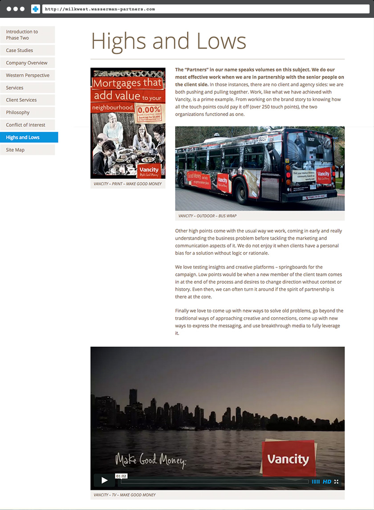

Wasserman + Partners Advertising
Down to business: two sites to compliment an advertising firm's hard-copy response to request-for-proposals.
Pacific Blue Cross
When a company decides what firm they want to represent their advertising interests they typically put out a call to agencies for what is known as a 'request for proposal' (RFP). In response, agencies compile a body of work that shows why they are best suited to take on the company's business. Responses use past and present advertising strategies as examples, taking form in a printed book. Because many campaigns now make use the digital to communicate their client's message, it seems only fitting that the digital also be used to communicate the effectiveness of these campaigns.
Wasserman + Partners needed a site to show the effectiveness of their campaigns and cohesiveness between their print and digital media strategies.
To open, the homepage features a formal letter from the president that would typically accompany a print RFP response.
The specifics of the RFP were addressed, and case studies organized by brand.

Each case spoke to the challenges faced by the brand and how Wasserman + Partners overcame them.

Biographies of team members were provided along with the relevant projects they championed.

Western Milk Marketing Partnership
The success of the first RFP response (W+P won the client) led to a second response for a different client.

A new theme was built using the elements of the first, and the structure of the original document remained.
Like the previous site, each page matched up to a section within the printed RFP submission. A site map on the final page allowed for quick navigation of the site. Browser compatibility was a significant consideration for both sites in case older versions of Internet Explorer were used by office computers.
Conclusion
Completing these sites could be a case study in and of itself. Spreading project-specific code across multiple sites makes efficient use of resources and could easily be leveraged to create quick responses for future RFP's.
- *** Private Links ***